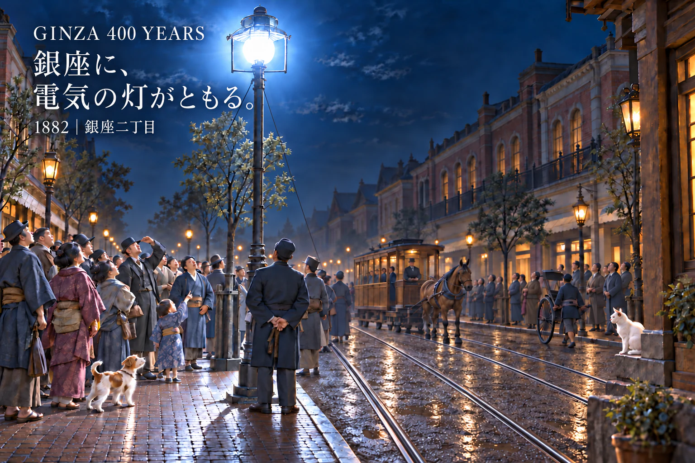

GINZA 400 YEARS
Created by GINZA DIGITAL ART LAB
銀座の400年を、歴史・復元・デジタルアートでたどる。
街に残る記録と記憶をもとに、過去・現在・未来の銀座を一つの物語として描きます。
1612
江戸に、銀座の灯がともる。
1612｜新両替町
江戸の銀座役所が駿府から移され、新両替町として歩み始めた頃。夕暮れの町に提灯がともり、商いと人の往来が静かに息づく、銀座の原点を描きます。
史料・史実をもとに構成したAI復元イメージです。

1882
銀座に、電気の灯がともる。
1882｜銀座二丁目
銀座二丁目にアーク灯がともり、ガス灯の時代から電気の光へ。雨に濡れた煉瓦街と複線の馬車鉄道、人々が見上げた文明開化の一夜を描きます。
史料・史実をもとに構成したAI復元イメージです。
この時代の銀座を読む 準備中（note記事URL設定待ち）
Digital Edition
デジタル版
準備中
GINZA 400 YEARS の作品は、今後デジタル版としての提供を予定しています。 価格・購入方法は、準備が整い次第あらためてご案内します。